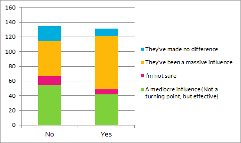

Career
Career Path
What are you doing right now/will be doing a few years from now?

Core sector, higher studies and consultancy jobs were primary career option for the seniors of 2016 with a contribution of 28.8%, 23% and 14.2% respectively. 13% of the respondents are pursuing a career in finance while 5.8% are trying to find success as an entrepreneur. Although a small number, 4.5% have decided to enter politics.
What do you see yourself doing 5 years down the line?
The responses were a lot different when asked about employment 5 years down the line. The number of people interested in working in the core sector dropped down to 17.3% while entrepreneurship became a popular choice for 18.8%. Non-core sectors such as consultancy and finance dropped to 4.8% and 6.7% respectively.
Place of Posting
Where are you headed off to after passing out?

Shattering the popular ‘Brain-Drain’ myth, almost 75% of our seniors will be working in India itself. USA was a distant second at 16% while only 3% will be relocating to Europe. Of those choosing to remain in India, 40% will continue to stay in Mumbai followed by 21% and 17% who shall relocate to Delhi and Bangalore respectively.
Where do you wish you were headed after graduating (irrespective of your posting)?

The responses of the batch of 2016 when asked where they would want to be placed ideally were quite different. In either case India still remained the top choice, this time bagging 44% of the total responses. However, USA was quite close with 32% wanting to shift to the States. 15% wished they would get a chance to live and work in Europe. Canada, Japan and the Middle-East were some other choices.
Where would you like to settle?

‘Home Sweet Home’ was a popular choice for 71% of the graduating batch who wished to settle down in India itself. North America was a distant second at 16.6% while 8.4% wanted to settle in Europe.
Entrance Examinations
Have you appeared for or are you planning to appear for the following exams?
Life of an IITian begins with an entrance exam and most of the graduating batch wants to end it with one as well. 42% wished to give GRE to gain access to universities for higher studies and research. 29% respondents were IIM-aspirants and were preparing for the coveted CAT. 22% wanted to appear for GMAT while 20% wanted to prove their mettle by taking up civil services exams.
Core Karoge?
Would you have pursued core had there been more opportunites?

The responses were surprising as a whooping 59% chose not to answer this question. 17% responded positively and 13% said no while 11% were unsure about what they would have done had such situation occurred.
Influence of major internships
How much did your internships help you in making an effective career choice?

Internships were a massive influence for 35.5% respondents. 30% said their choices were moderately affected by internships. 9.3% were disappointed with their internship experience while 5.72% did not do an internship post their junior year.
Have you had a change of mind regarding the sector of your career after completing a major intern?

41% seniors remained firm about their career choice after completing their intern while 39% decided to pursue a different sector. 20% chose not to answer the question.
